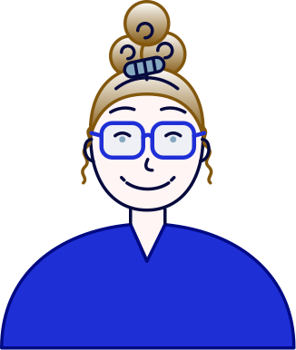

Lotte Nielsen · multimediedesigner
Om mig

- Multimediedesign studerende, 3. semester på IBA
- UX, UI, frontend og AI som ét workflow
- Lærer HTML og CSS, SCSS og JS er det næste
- Tænker i objekter med OOUX
- Producerer prototyper i Figma
- Design Thinking i praksis
- Prompter med omtanke
- Bygger læring om cybersikkerhed i Cyber Hero
- Halvt pixel, halvt prosa
Jeg er en digital designer med fokus på UX, design og webudvikling, understøttet af AI. Jeg kan lide, når det tekniske og det fortællende mødes.